Release Notes | Downloadable Release Notes | Old Versions
 Plugin Version: 1.4.40
Plugin Version: 1.4.40
Introduction
FTP Monitor is a plugin which creates new cases by periodically checking an FTP or Shared/Local directory. For each new file in that directory, a new case is created in ProcessMaker.
How the plugin works
The FTP Monitor needs to have access to a valid FTP or Shared/Local directory. For each file uploaded to that directory, a new case will automatically be created and automatically routed to the second task in the process. That file is added as an Input Document file in the new case. For this reason, the process needs to include an initial task which will automatically be skipped by the FTP Monitor and an Input Document. The FTP Monitor checks for new files in the directory when ProcessMaker's cron.php file is executed. To ensure that FTP Monitor is regularly checking the directory, a cron job in Linux/UNIX or a Scheduled Task in Windows should be created to periodically execute ProcessMaker's cron.php file.
In addition, if an XML file is placed in the directory with the same filename as the file that initiated the case, than its XML data will be parsed and added as case variables in the new case. The passed variables can be used in fields in DynaForms, case variables in triggers, conditions and evaluation routing rules or in the variables to assign users to tasks.
Requirements
ProcessMaker Requirements
- ProcessMaker v. 2.5.X + available hotfix (2.5.2.4 - 2.5.2.5) and Enterprise Plugin v2.0.17 or higher
or
- ProcessMaker Enterprise Edition v. 2.8.0 or higher
Browser Compatibility
Tested with the following browsers:
- Mozilla Firefox v. 33.
- Google Chrome v. 38.
- Internet Explorer v. 10.
Installation and Configuration
- Login with a user such as "admin" who has the PM_SETUPADVANCE permission in his/her role and then go to ADMIN > Plugins > Enterprise Manager. Either install the FTP Monitor plugin by clicking on
 Install from File and uploading the plugin file or by clicking on its Install Now button in the list of available plugins.
Install from File and uploading the plugin file or by clicking on its Install Now button in the list of available plugins.
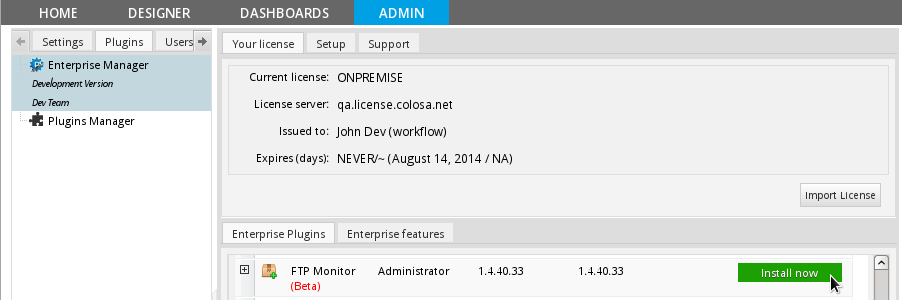
- After installing the plugin, make sure that the FTP Monitor plugin is
 enabled.
enabled.
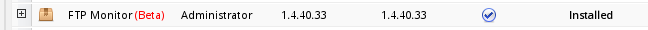
Creating an FTP Monitor Connection
Once the plugin is enabled, go to ADMIN > Plugins and the FTP Monitor option will be available in the sidebar. Click on it and all the available connections will be listed:
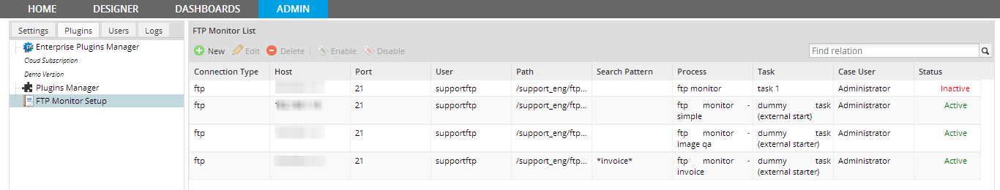
In connection list, the menu offers the following options:
- New: Create a new FTP or SHARED/LOCAL connection by clicking on New.
- Edit: Edit a created connection, by choosing one in the list and clicking on Edit.
- Disable: Disable an existing connection, by choosing one in the list and clicking on Disable.
- Enable: Enable an existing connection, by choosing one in the list and clicking on Enable.
To create a new connection, click on New, and define the properties of the new connection:
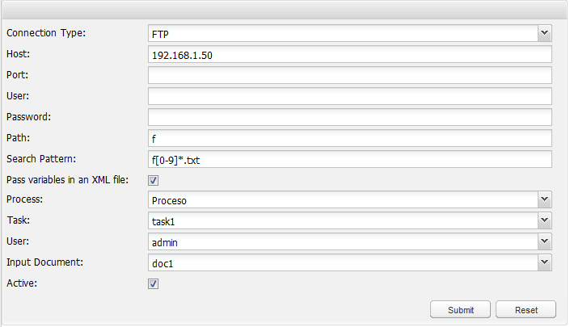
Select whether the Connection Type is FTP or SHARED (named LOCAL in version 1.4.23 and later). Depending on the selection, different properties will need to be defined.
In version 1.4.23 and later, there is a new interface to define an FTP monitor connection which divides the form in two sections and provides a Test connection button to check whether the connection is correct:
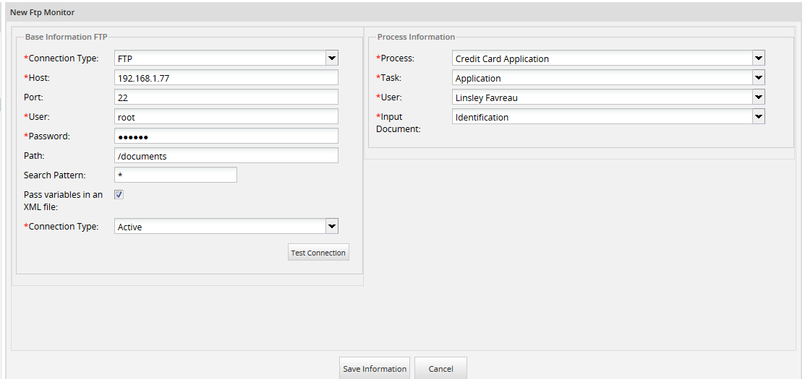
FTP Connection Properties
Creates cases from a specific directory in an FTP server
Basic Information FTP
- Host: The server address where the FTP server is located.
- Port: The server port for FTP. Leave blank to use the default port (21 for FTP or 22 for SSH).
- User: Enter the username if FTP server needs authentication. Otherwise, leave it blank.
- Password: The password if the FTP server needs authentication. Otherwise, leave it blank.
- Path: Specify the directory where files will be uploaded to initiate new ProcessMaker cases.
- Search Pattern: Use glob pattern matching to specify which files will be used to initiate new cases. Use * to match any number of characters (including zero), ? to match any single character, [xyz] to match one of the specified characters and \ (backslash) to escape a character so it won't be treated as a wildcard. For example, * would accept all files, *.doc would except only Word documents, *invoice* would accept any files that have the word "invoice" in the filename, and [aeiou]*.pdf would accept any PDF files that start with a vowel in the filename.
- Pass Variables in an XML file: Mark this option if variables in an XML file will be added as case variables in the new cases. See XML File Format for more information.
Process Information
- Process: Select the process (in the current workspace) in which new cases will be created.
- Task: Select the initial task where the new case will begin.
- User: Select the user who will be designated to work to the initial task in the case. Only users who are assigned to the selected initial task are available to be selected.
- Input Document: Choose the Input Document which the uploaded file will be attached to.
- Active: Select this option if the connection will be used, otherwise unselect it to deactivate the connection so the directory will not be monitored and new cases will not be created.
(Formerly named Shared, but changed to Local in version 1.4.23 and later)
A local directory located on the server where ProcessMaker is installed (or a NAT addressable from the local directory structure) is used to initiate new ProcessMaker cases.
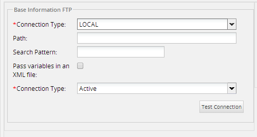
This option does not require authentication, but make sure that this directory can by read by Apache which is running ProcessMaker. On Linux/UNIX systems, the user running Apache (apache in Red Hat/Fedora, www-data in Debian/Ubuntu, and wwwrun (or the www group) in SuSE/OpenSUSE) should have read access to the directory.
XML File Format
To automatically create case variables in the new case, an XML file can be placed in the specified directory to initiate new cases. The XML file must have the following structure:
<field1>value1</field1>
<field2>value2</field2>
...
</metadata>
Where filename.ext is the filename of the file initiating the case, and field1 and field2 will become case variables in the new case, which can be used in DynaForm fields or in Trigger code. Note that variable names are case sensitive and that all values will be treated as strings and can contain spaces and new lines. If the value will be used in a ProcessMaker date field, the date should be in YYYY-MM-DD or YYYY-MM-DD HH:MM:SS format, such as 2014-12-31 or 1970-01-25 18:59:00. If the value is a number that will be used in a mathematical calculation by ProcessMaker, it should not have a thousands separator and "." (dot) should be used as the decimal point. For example, 123456 (integer) or 89797.99 (floating point number).
The XML file must have the same filename as the file which is used to initiate the new case. Otherwise, the FTP Monitor won't recognize XML file and associate its data with the right case.
For example, if starting a case with a file named clientAcmeConsulting.pdf, then its XML file should be named clientAcmeConsulting.xml. If creating a new case with the case variables "clientFirstName", "clientLastName", "address" and "contractAmount", then the following XML file could be used:
<firstName>John Robert</firstName>
<lastName>Doe</lastName>
<address>234 Oak St.
Littletown CA 73613</address>
<contractAmount>2800.00</contractAmount>
</metadata>
Examples Creating Cases
Using an FTP Connection
Uploading images into the Server
This first example will show how to create cases from image files uploaded to an FTP server.
Step 1 - Creating the connection: Create a FTP connection in order to specify the location where the image files will be uploaded:
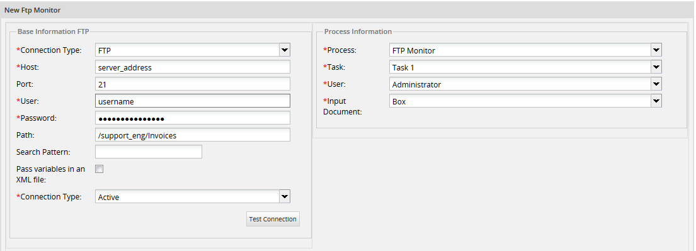
Note that in this example, the FTP Monitor will only create new cases, but will not create case variables in those cases, since the the option Pass variables in an XML file was not selected.
Step 2 - Upload Images: Upload image files to the FTP directory:
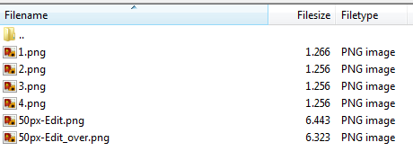
Step 3 - Execute cron.php: After creating the FTP Monitor connection, configure the server to periodically execute the cron.php file.
It is a good idea to manually execute the cron.php file at least on time to make sure that new cases are being created correctly. When cron.php executes, it will report how many new files were found in the directory to initiate new cases. In the following example, six files were found to initiate new cases.

The second part of the execution details information about each case created with its corresponding case number:
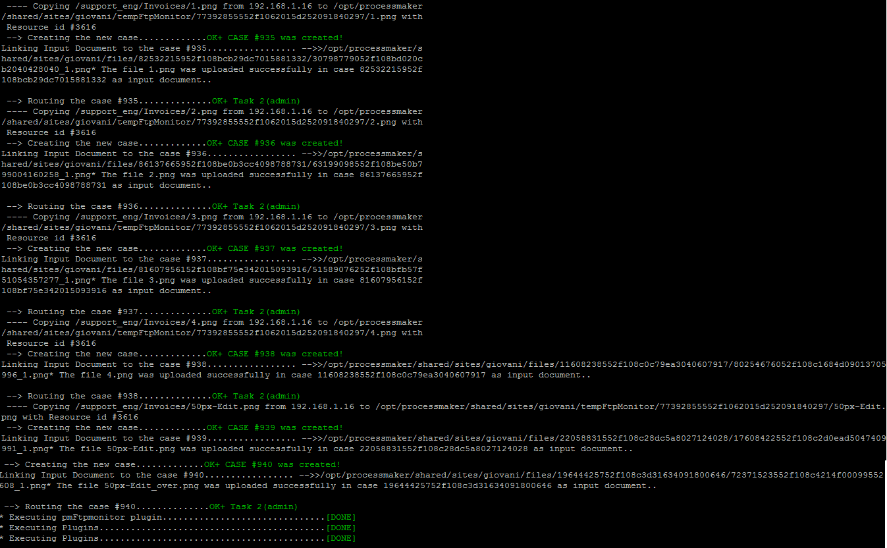
In ProcessMaker six new cases were created in the Inbox:
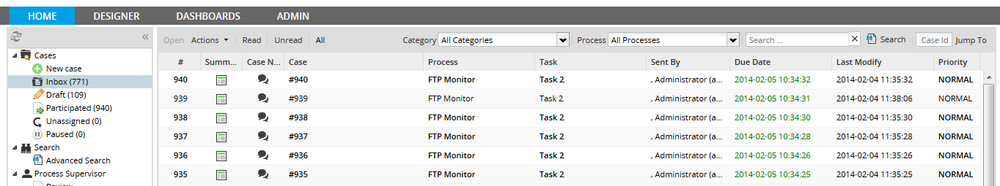
Step 4 - Route the case: Choose a case and open it to see its image file which initiated the case was attached as an Input Document file:
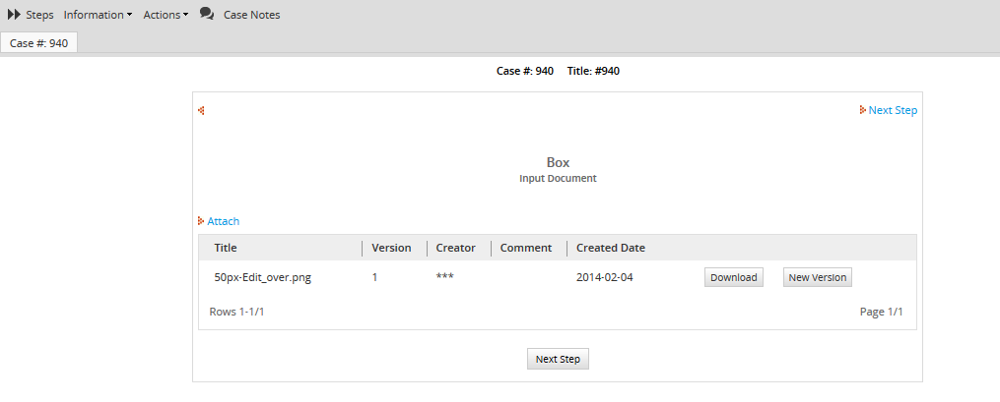
Using an XML file and conditional routing
The following example will show how to start a case from a file and a corresponding XML file, which passes variables to the case to automatically fill fields in a DynaForm. One of the passed variables named "billToCountry" is used in a conditional routing rule to route the case to the second task in the process.
Step 1 - Create a process with a conditional routing rule: Create a process whose first task is named Dummy Task, since this task will automatically be executed by the FTP Monitor and route onto the next task using a evaluation routing rule. This routing rule will choose between 3 possible tasks, which terminate the process.
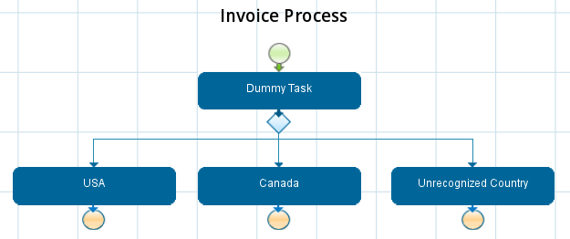
The evaluation routing rule will select whether to go to the "USA", "Canada" or "Unrecognized Country" tasks, based upon the value in the @@billToCountry case variable, which comes from the XML file.
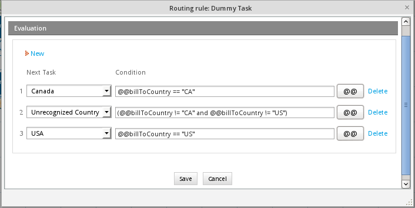
Step 2 - Create DynaForm: Create the following DynaForm which contains the fields which are filled from data in the XML file.
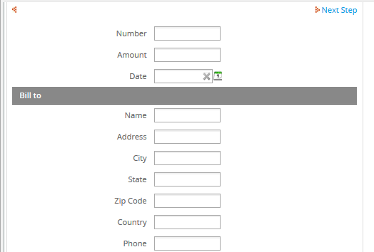
Set this DynaForm as a step in the second tasks "USA", "Canada" and "Unrecognized Country", so the user can view the data when running a case. Remember that all steps in the initial task are automatically skipped by FTP Monitor when it initiates a case.
Step 3 - Create the connection: Create an FTP Monitor connection and mark the Pass variables in an XML file option and include as a search pattern *invoice* so that only files with the word "invoice" can initiate cases.
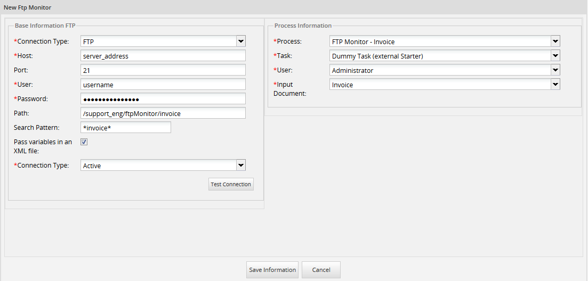
Step 4 - Create the XML data file: For every case which will be initiated by the FTP Monitor, create an XML file with the following structure:
<billToName>Jane Koothrappali</billToName>
<billToAddress>9784 Silent Private</billToAddress>
<billToCity>Soda Bay</billToCity>
<billToState>AZ</billToState>
<billToZipCode>86936-7551</billToZipCode>
<billToCountry>US</billToCountry>
<billToPhone>(928) 760-3765</billToPhone>
<shipToName>Naruto Wolowitz</shipToName>
<shipToAddress>7366 Clear Robin Front</shipToAddress>
<shipToCity>Never Spur</shipToCity>
<shipToState>MT</shipToState>
<shipToZipCode>59893-6673</shipToZipCode>
<shipToCountry>US</shipToCountry>
<shipToPhone>(406) 972-2585</shipToPhone>
<totalAmount>78.164788417145</totalAmount>
<invoiceNumber>196</invoiceNumber>
<invoiceDate>1971-12-8</invoiceDate>
</metadata>
Each field name in the XML file must be the same field names in the DynaForm. Remember that field names are case sensitive.
This XML can be automatically created, using a database trigger when a new invoice is added to the database or using a stored procedure which is periodically executed. For example the following MySQL query in the INVOICES table would create an XML data file for a specified invoice number:
"<metadata file='", INV_NUMBER, "_invoice.png'>\n",
" <billToName>", BILL_NAME, "</billToName>\n",
" <billToAddress>", BILL_ADDRESS, "</billToAddress>\n",
" <billToCity>", BILL_CITY, "</billToCity>\n",
" <billToState>", BILL_STATE, "</billToState>\n",
" <billToZipCode>", BILL_ZIPCODE, "</billToZipCode>\n",
" <billToCountry>", BILL_COUNTRY, "</billToCountry>\n",
" <billToPhone>", BILL_PHONE, "</billToPhone>\n",
" <shipToName>", SHIP_NAME, "</shipToName>\n",
" <shipToAddress>", SHIP_ADDRESS, "</shipToAddress>\n",
" <shipToCity>", SHIP_CITY, "</shipToCity>\n",
" <shipToState>", SHIP_STATE, "</shipToState>\n",
" <shipToZipCode>", SHIP_ZIPCODE, "</shipToZipCode>\n",
" <shipToCountry>", SHIP_COUNTRY, "</shipToCountry>\n",
" <shipToPhone>", SHIP_PHONE, "</shipToPhone>\n",
" <totalAmount>", INV_AMOUNT, "</totalAmount>\n",
" <invoiceNumber>", INV_NUMBER, "</invoiceNumber>\n",
" <invoiceDate>", INV_DATE, "</invoiceDate>\n",
"</metadata>"
)
FROM INVOICES WHERE INV_NUMBER = XXXX
INTO OUTFILE /path/dir/XXXX_invoice.xml;
Another way to automatically create the XML file is to use a script, such as the following PHP code which creates an XML file for every record in the INVOICE table whose field CASE_START_DATE is set to NULL (no data). The script uses the ftp_connect() and ftp_login() functions to connect to the FTP server and login. It also uses mysqli to connect to a MySQL database.
$ftp_server = "ftp.example.com";
$ftp_username = "myuser";
$ftp_password = "p@ssW0rD";
$ftp_conn = ftp_connect($ftp_server) or die("Could not connect to $ftp_server");
$ftp_log = ftp_login($ftp_conn, $ftp_username, $ftp_userpass);
$db = new mysqli('localhost', 'myuser', 'p@ssw0rd', 'BILLING_DATABASE');
if ($db->connect_errno > 0) {
die('Unable to connect to database [' . $db->connect_error . ']');
}
$sql = "SELECT * FROM INVOICES WHERE CASE_START_DATE IS NULL";
if (!$result = $db->query($sql)) {
die('There was an error running the query [' . $db->error . ']');
}
while ($row = $result->fetch_assoc()) {
$xml = "<metadata file='{$row['INV_NUMBER']}_invoice.png'>\n" .
" <billToName>{$row['BILL_NAME']}</billToName>\n" .
" <billToAddress>{$row['BILL_ADDRESS']}</billToAddress>\n" .
" <billToCity>{$row['BILL_CITY']}</billToCity>\n" .
" <billToState>{$row['BILL_STATE']}</billToState>\n" .
" <billToZipCode>{$row['BILL_ZIPCODE']}</billToZipCode>\n" .
" <billToCountry>{$row['BILL_COUNTRY']}</billToCountry>\n" .
" <billToPhone>{$row['BILL_PHONE']}</billToPhone>\n" .
" <shipToName>{$row['SHIP_NAME']}</shipToName>\n" .
" <shipToAddress>{$row['SHIP_ADDRESS']}</shipToAddress>\n" .
" <shipToCity>{$row['SHIP_CITY']}</shipToCity>\n" .
" <shipToState>{$row['SHIP_STATE']}</shipToState>\n" .
" <shipToZipCode>{$row['SHIP_ZIPCODE']}</shipToZipCode>\n" .
" <shipToCountry>{$row['SHIP_COUNTRY']}</shipToCountry>\n" .
" <shipToPhone>{$row['SHIP_PHONE']}</shipToPhone>\n" .
" <totalAmount>{$row['INV_AMOUNT']}</totalAmount>\n" .
" <invoiceNumber>{$row['INV_NUMBER']}</invoiceNumber>\n" .
" <invoiceDate>{$row['INV_DATE']}</invoiceDate>\n" .
"</metadata>";
$xmlFilename = $row['INV_NUMBER'] . "_invoice.xml";
file_put_contents("/local/path/" . $xmlFilename, $xml);
//use the following code to upload the $xmlFilename to an FTP directory:
if (ftp_put($ftp_conn, "/server/path/" . $xmlFilename, "/local/path/" . $xmlFilename, FTP_ASCII)) {
echo "Successfully uploaded file '$xmlFilename'\n";
//set the CASE_START_DATE to the current time:
$db->query("UPDATE INVOICES SET CASE_START_DATE = NOW() WHERE INV_NUMBER = " . $row['INV_NUMBER']);
}
else {
echo "Error uploading $xmlFilename\n";
}
}
ftp_close($ftp_conn);
$db->close();
?>
Set the above script to be periodically executed as a cron job in Linux/UNIX or as a Scheduled Task in Windows.
Step 5 - Upload files: Now upload the XML file and the PNG image files which have the same filenames to the directory monitored both of them with the same name as the image below:
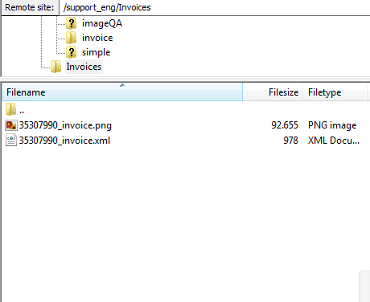
Step 6 - Execute cron.php: Execute cron.php to start cases for each file uploaded to the monitored directory:

Case 944 was created and according to the condition case must go to US task since that is the value entered in the XML. So login with the user assigned to that task and open case 944:
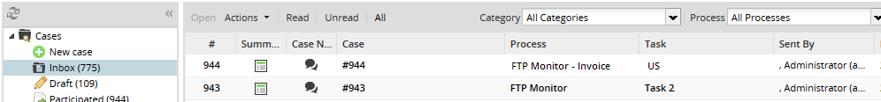
The file which initiated the case was added as an Input Document file:

Click on Next Step to see the DynaForm filled with the variables passed from the XML file:

Follow this example if the FTP Monitor starts cases by using files placed a local directory in the server where ProcessMaker is installed. Follow the steps below in order to create cases using a Local connection.
Step 1 - Create the connection: Create the connection choosing a Local type. Select a process with at least two tasks:
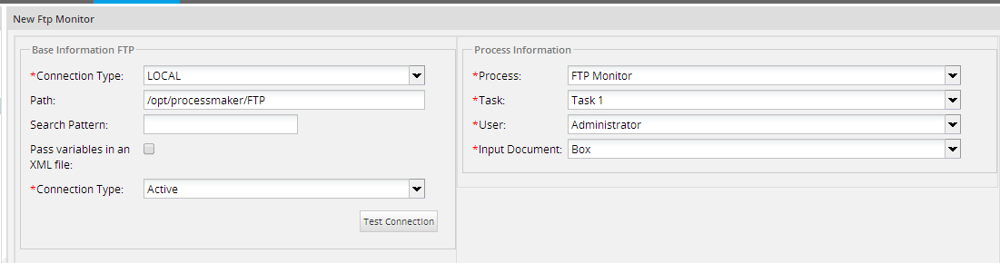
Step 2 - Upload files to the ProcessMaker server: Now, place files in the directory in the same server where ProcessMaker is installed. In this example, the monitored directory is inside the ProcessMaker main directory:
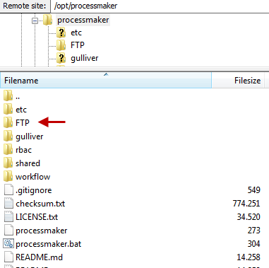
Two files are uploaded, so two cases will be created:

An XML file has been placed in the directory, but the Pass variables in an XML files option wasn't marked, so no variables will be passed and file will be treated as an independent file to start a case.
Step 3 - Execute cron.php: Now execute the cron.php file:

In the details output by cron.php, the two new cases are listed, along with the names of the uploaded files. Login to ProcessMaker with the user who was assigned to the two cases to see them in the Inbox:

Open one of the cases to see the file which was used to initiate the case. It should have been added as an Input Document file:
FTP Monitor Log
For each cron executed a log is created. It will display a registry which will have all the characteristics of the cron executed:
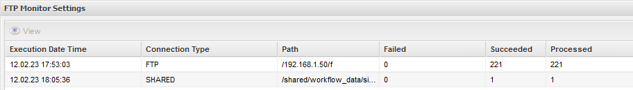
Characteristics:
- Execution Date Time: it displays the cron execution time.
- Connection Type: it displays if the connection is FTP or SHARED.
- Path: it shows the path where the files are located.
- Failed: it shows if some cases weren't created.
- Succeeded: it shows how many cases were created.
- Processed: it shows how many files were processed.
FTP Monitor Log Details
The FTP Monitor Log lists how many cases which were initiated each time cron.php file was executed. To see the log, go to ADMIN > Logs > FTP Monitor Log:
Click on the View icon, to see a list of execution times and the number of cases which were created.

To see a list of the cases which was initiated, click on an execution time to display the following details:
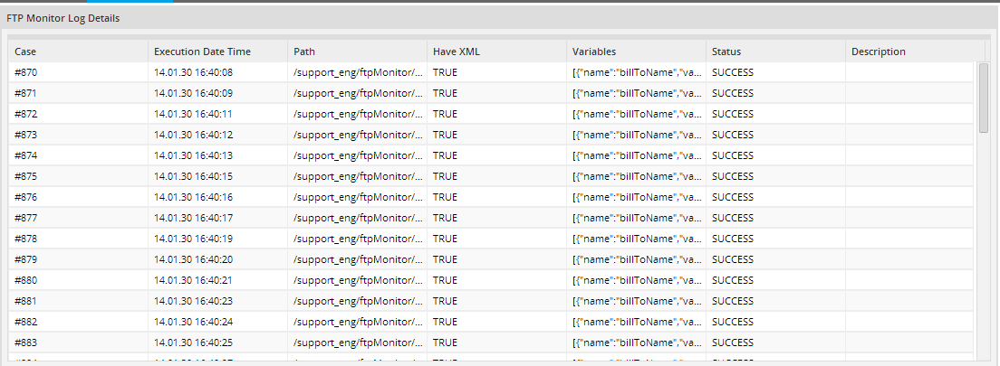
Characteristics
Execution Date Time:Displays when the cron.php file was executed.
Path:Displays the file uploaded from the directory to ProcessMaker to initiate the case.
Have XML:Displays TRUE if the case has an associated XML file and the option Pass variables in an XML file' was enabled. Otherwise, it displays FALSE.
Variables:Displays the variables passed from the XML file to the case.
Status:Set to "OK" if case(s) were created without problems.
Description:Displays any errors that may occur during the creation of cases.